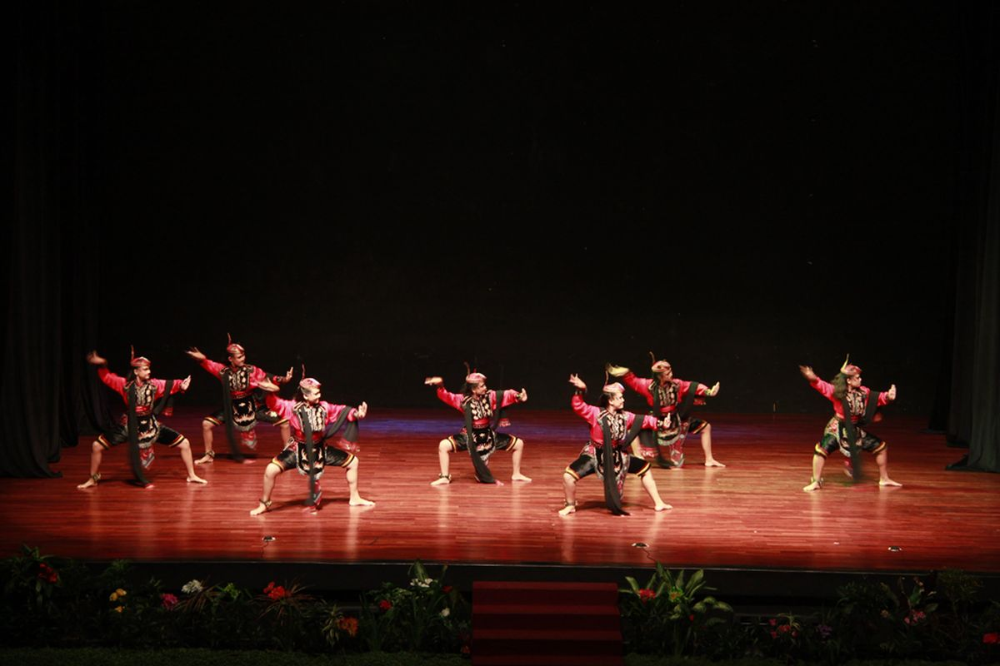
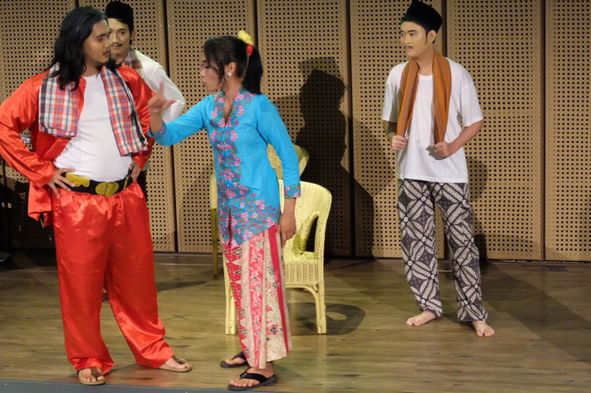
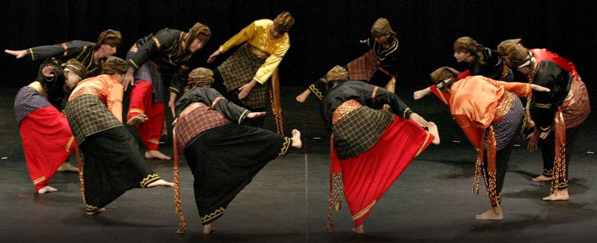
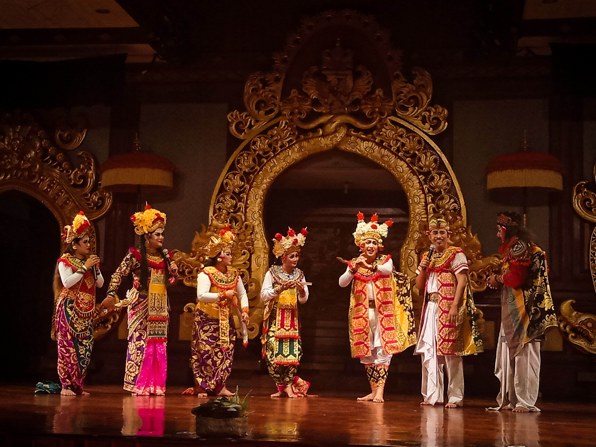
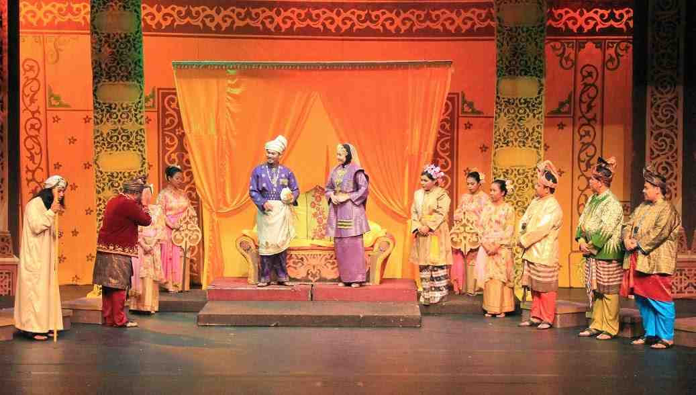
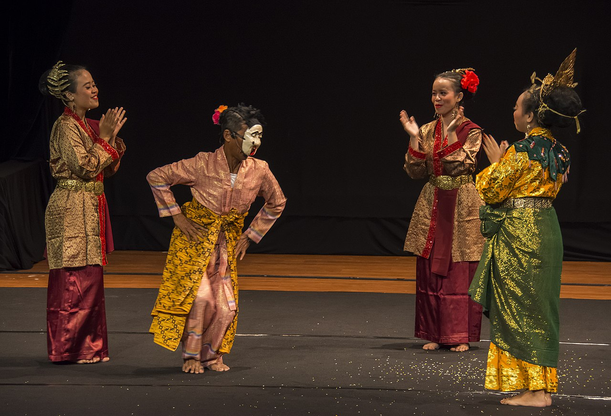
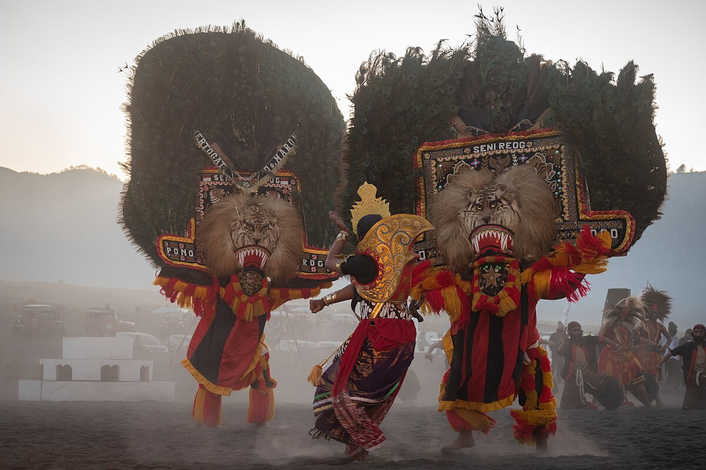

Seni Teater

Wayang Kulit
Teater bayangan khas Jawa dan Bali yang menggunakan boneka kulit tipis sebagai tokoh. Dalang memainkan peran, membawakan cerita dari epos Ramayana dan Mahabharata. Pertunjukan diiringi musik gamelan dan suluk (nyanyian khas).

Wayang Golek
Boneka kayu tiga dimensi khas Sunda yang dimainkan oleh dalang. Cerita bisa berupa kisah pewayangan atau cerita Islam. Pengiring musik biasanya degung (gamelan Sunda).

Wayang Orang
Pementasan wayang dengan aktor manusia yang memakai kostum dan tari tradisional. Cerita biasanya sama dengan wayang kulit, dengan dialog dan musik gamelan. Populer di keraton Jawa seperti Yogyakarta dan Surakarta.

Ludruk
Teater rakyat dari Jawa Timur yang menampilkan cerita kehidupan sehari-hari dengan bumbu humor, kritik sosial, dan improvisasi. Semua pemain biasanya laki-laki, termasuk yang berperan sebagai wanita.

Ketoprak
Teater tradisional dari Jawa Tengah dan Yogyakarta, mengisahkan cerita sejarah, legenda, atau mitos. Menggabungkan dialog, nyanyian, dan musik gamelan Jawa.

Lenong
Teater tradisional Betawi dengan gaya komedi dan improvisasi yang kuat. Banyak interaksi langsung dengan penonton dan bahasa yang santai.

Randai
Seni pertunjukan Minangkabau yang memadukan drama, tari, musik (saluang dan rabab), dan silat. Pemain tampil dalam lingkaran, menceritakan kisah rakyat Minangkabau.

Arja
Opera tradisional Bali yang menggabungkan nyanyian, tari, dan drama dengan bahasa Bali. Ceritanya biasanya dari epos Ramayana atau legenda setempat.

Bangsawan
Teater Melayu yang menampilkan kisah kerajaan, romantis, dan mitos. Dilengkapi dengan musik tradisional Melayu dan kostum yang mewah.

Makyong
Seni teater Melayu dari Riau dan sekitarnya. Menggabungkan tari, musik, dan dialog yang bernuansa magis dan spiritual. Biasanya pemain perempuan.

Reog Ponorogo
Pertunjukan khas Ponorogo, Jawa Timur, menampilkan tarian dengan topeng besar seperti Singa Barong. Penuh unsur mistik dan kekuatan fisik para pemain.

Mamanda
Teater tradisional Melayu Kalimantan Selatan yang mengisahkan cerita rakyat, legenda, dan sejarah daerah. Memadukan dialog, nyanyian, dan musik tradisional seperti gambus.